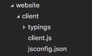

jsconfig.json
What is jsconfig.json?
The presence of jsconfig.json file in a directory
indicates that the directory is the root of a JavaScript
Project. The jsconfig.json file specifies the
root files and the options for the features provided by the
JavaScript language service.
Tip: If you are not using JavaScript, you do not need to worry about
jsconfig.json.Tip:
jsconfig.jsonis a descendent oftsconfig.json, which is a configuration file for TypeScript.jsconfig.jsonistsconfig.jsonwith"allowJs"attribute set totrue.
Why do I need a jsconfig.json file?
VS Code's JavaScript support can run in two different modes:
-
File Scope - no jsconfig.json: In this mode, JavaScript files opened in Visual Studio Code are treated as independent units. As long as a file
a.jsdoesn't reference a fileb.tsexplicitly (either using /// reference directives or CommonJS modules), there is no common project context between the two files. -
Explicit Project - with jsconfig.json: A JavaScript project is defined via a
jsconfig.jsonfile. The presence of such a file in a directory indicates that the directory is the root of a JavaScript project. The file itself can optionally list the files belonging to the project, the files to be excluded from the project, as well as compiler options (see below).
The JavaScript experience is improved when you have a
jsconfig.json file in your workspace that defines
the project context. For this reason, we offer a hint to
create a jsconfig.json file when you open a
JavaScript file in a fresh workspace.
Location of jsconfig.json
We define this part of our code, the client side of our
website, as a JavaScript project by creating a
jsconfig.json file. Place the file at the root of
your JavaScript code as shown below.

In more complex projects, you may have more than one
jsconfig.json file defined inside a workspace.
You will want to do this so that the code in one project is
not suggested as IntelliSense to code in another project.
Illustrated below is a project with a client and
server folder, showing two separate JavaScript
projects.

Examples
By default the JavaScript language service will analyze and provide IntelliSense for all files in your JavaScript project. You will want to specify which files to exclude or include in order to provide the proper IntelliSense.
Using the "exclude" property
The exclude attribute tells the language service
what files are and are not part of your source code. This
keeps performance at a high level. If IntelliSense is slow,
add folders to your exclude list (VS Code will
prompt you to do this if it detects the slow down).
{
"compilerOptions": {
"target": "ES6"
},
"exclude": [
"node_modules"
]
}
Tip: You will want to
excludefiles generated by a build process (for example, adistdirectory). These files will cause suggestions to show up twice and will slow down IntelliSense.
Using the "include" property
Alternatively, you can explicitly set the files in your
project using the include attribute. If no
include attribute is present, then this defaults
to including all files in the containing directory and
subdirectories. When a include attribute is
specified, only those files are included. Here is an example
with an explicit include attribute.
{
"compilerOptions": {
"target": "ES6"
},
"include": [
"src/**/*"
]
}
Tip: The file paths in
excludesandincludeare relative to the location ofjsconfig.json.
jsconfig Options
Below are jsconfig
"compilerOptions" to configure the JavaScript
language support.
Tip: Do not be confused by
compilerOptions. This attribute exists becausejsconfig.jsonis a descendent oftsconfig.json, which is used for compiling TypeScript.
| Option | Description |
|---|---|
noLib |
Do not include the default library file (lib.d.ts) |
target |
Specifies which default library (lib.d.ts) to use. The values are "ES3", "ES5", "ES6". |
experimentalDecorators |
Enables experimental support for proposed ES decorators. |
allowSyntheticDefaultImports |
Allow default imports from modules with no default export. This does not affect code emit, just type checking. |
baseUrl |
Base directory to resolve non-relative module names. |
paths |
Specify path mapping to be computed relative to baseUrl option. |
Using webpack aliases
For IntelliSense to work with webpack aliases, you need to
specify the paths keys with a glob pattern.
For example, for alias 'ClientApp':
{
"compilerOptions": {
"baseUrl": ".",
"paths": {
"ClientApp/*": ["./ClientApp/*"]
}
}
}
and then to use the alias
import Something from 'ClientApp/foo'
Best Practices
Whenever possible, you should exclude folders with JavaScript files that are not part of the source code for your project.
Tip: If you do not have a
jsconfig.jsonin your workspace, VS Code will by default exclude thenode_modulesfolder.
Below is a table mapping common project components to their installation folders which are recommended to exclude:
| Component | folder to exclude |
|---|---|
node |
exclude the node_modules folder |
webpack, webpack-dev-server
|
exclude the content folder, e.g., dist.
|
bower |
exclude the bower_components folder |
ember |
exclude the tmp and
temp folders
|
jspm |
exclude the jspm_packages folder |
When your JavaScript project is growing too large and
performance slows, it is often because of library folders like
node_modules. If VS Code detects that your
project is growing too large, it will prompt you to edit the
exclude list.
Tip: Sometimes changes to configuration, such as adding or editing a
jsconfig.jsonfile are not picked up correctly. Running the Reload JavaScript Project command should reload the project and pick up the changes.
Down Level Compilation with TypeScript Compiler
The following compiler options in
jsconfig.json apply when tsc is used
for down level compiling of ES6 JavaScript to an older
version:
| Option | Description |
|---|---|
module |
Specify module code generation. The values are "commonjs", "system", "umd", "amd", "es6", "es2015" |
diagnostics |
Show diagnostic information. |
emitBOM |
Emit a UTF-8 Byte Order Mark (BOM) in the beginning of output files. |
inlineSourceMap |
Emit a single file with source maps instead of having a separate file. |
inlineSources |
Emit the source alongside the sourcemaps within a single file; requires --inlineSourceMap to be set. |
jsx |
Specify JSX code generation: "preserve" or "react". |
reactNamespace |
Specifies the object invoked for createElement and __spread when targeting 'react' JSX emit. |
mapRoot |
Specifies the location as an uri in a string where debugger should locate map files instead of generated locations. |
noEmit |
Do not emit output. |
noEmitHelpers |
Do not generate custom helper functions like __extends in compiled output. |
noEmitOnError |
Do not emit outputs if any type checking errors were reported. |
noResolve |
Do not resolve triple-slash references or module import targets to the input files. |
outFile |
Concatenate and emit output to single file. |
outDir |
Redirect output structure to the directory. |
removeComments |
Do not emit comments to output. |
rootDir |
Specifies the root directory of input files. Use to control the output directory structure with --outDir. |
sourceMap |
Generates corresponding '.map' file. |
sourceRoot |
Specifies the location where debugger should locate JavaScript files instead of source locations. |
stripInternal |
`do not emit declarations for code that has an '@internal' annotation. |
watch |
Watch input files. |
emitDecoratorMetadata |
Emit design-type metadata for decorated declarations in source. |
noImplicitUseStrict |
Do not emit "use strict" directives in module output. |